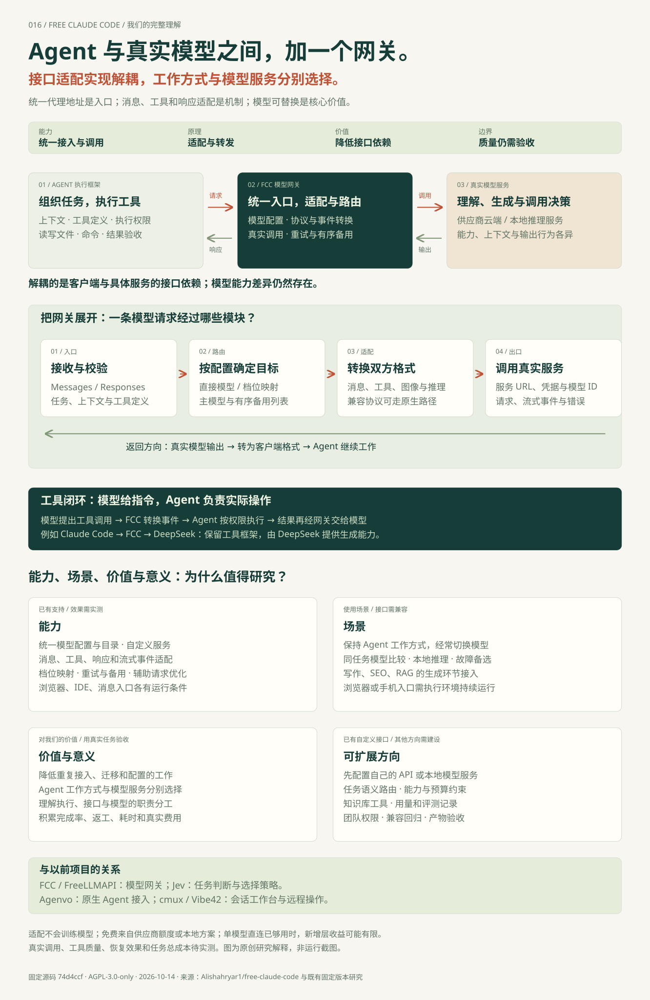
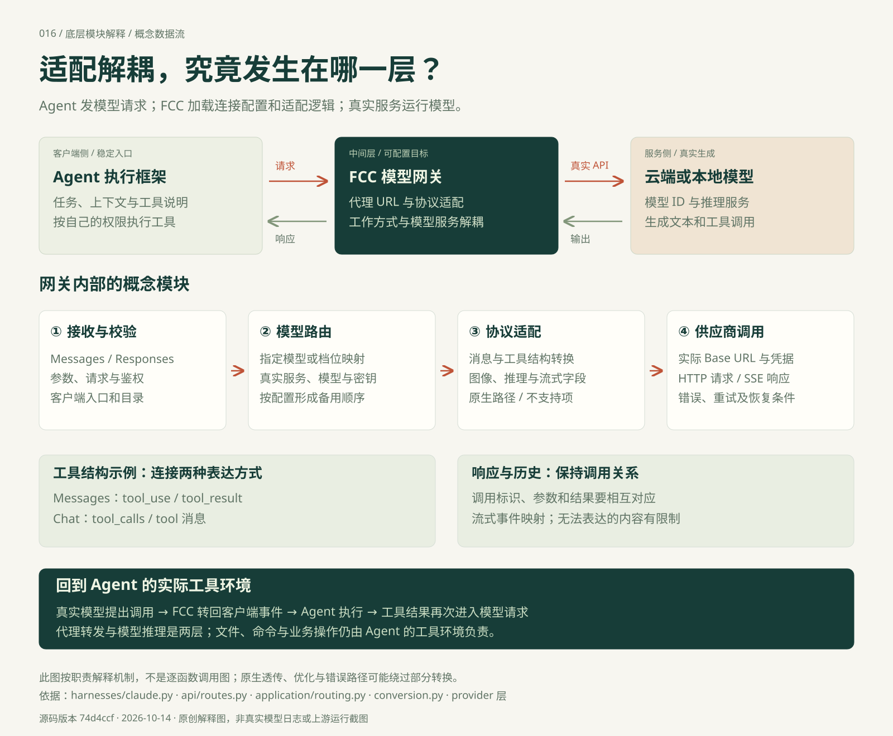

AGENT / 执行者
工具怎么用，由它组织。
接收目标，组织任务和上下文，把工具定义交给模型，并在模型提出调用后，按权限读写文件、运行命令或执行其他工具。
工作流与执行权限GITHUB 项目研究 · 016
在 Agent 与真实模型之间增加网关。统一接口与协议适配，让工作方式和模型服务分别选择。Agent 组织任务并执行工具，真实模型负责理解、生成与调用决策。
组织任务 · 管理上下文 · 执行工具
转换格式 · 路由模型 · 重试与备选
理解问题 · 生成内容 · 提出工具调用
从我们讨论的结论出发
我们的补充理解是：FCC 是位于 Agent 与真实模型之间的模型网关。共用地址是入口配置；消息、工具和响应的适配是底层机制；降低对具体模型服务的依赖、让模型可替换，是核心价值。
“通过统一模型网关适配与转发，实现 Agent 和模型服务的接入解耦。”
“公共”在这里指多个客户端共用同一个入口。FCC 通常运行在本机；是否提供网络访问，是另一项部署选择。
| 问题 | 我们整理的理解 |
|---|---|
| 能力是什么？ | 集中配置真实模型服务，接收 Agent 的模型请求，适配消息、工具和流式响应，按配置选目标并处理符合条件的重试与备用；多个集成入口围绕这条模型通路展开。 |
| 原理是什么？ | Agent 指向共用代理 API → FCC 解析目标与转换协议 → 调用真实模型 → 转回响应 → Agent 执行工具 → 工具结果进入下一轮。模型仍由供应商或本地推理服务运行。 |
| 价值是什么？ | 通过适配降低接入耦合，让 Agent 工作方式和模型服务分别选择，减少重复配置与迁移，为同任务评测、成本比较和故障备选提供统一入口。 |
| 可扩展场景是什么？ | 多模型编程、写作与报告、资料问答、网页审查、本地推理、任务语义路由及团队入口；需要分别补齐工作流、资料、权限、协议兼容和结果验收。 |
AGENT / 执行者
接收目标，组织任务和上下文，把工具定义交给模型，并在模型提出调用后，按权限读写文件、运行命令或执行其他工具。
工作流与执行权限FCC / 连接者
维护服务商与模型配置，解析实际目标，转换接口格式，整理流式事件，并处理重试、备用模型和兼容差异。
代理与接口工程MODEL / 决策者
根据收到的问题、上下文和工具说明生成回答或工具调用。理解、推理、知识覆盖和调用质量取决于真实模型及输入资料。
生成与推理能力客户端按支持的协议调用 FCC；任务组织、工具执行和权限继续由 Agent 管理。选择另一个模型服务时，主要调整网关目标配置。
供应商 URL、凭据、模型 ID 与协议适配由网关处理，减少每个客户端分别接入的重复工作。兼容的接口可以走原生路径。
统一入口不会消除模型的上下文、工具、图像和输出行为差异。客户端要支持代理配置，实际任务质量、权限和费用仍需逐项验证。
Agent 请求的入口，例如本机 HTTP 服务；具体端口以 FCC 配置和启动日志为准。
FCC 调用的云端 API，或 Ollama 等本地推理服务；真实模型在这一端运行。
保存代码和安装文件的位置。它与 Agent 使用的 API 地址是两种不同概念。
把完整理解放进一张图
从 Agent → 网关 → 真实模型出发，展开网关内部、工具往返、已有能力、可扩展场景、个人意义及同类项目的位置。点击大图可放大、滚动阅读；SVG 和 PNG 均可下载。

点击放大完整图 ↗可操作的原理说明
换一个 Agent 或模型示例，逐步查看请求、转换、回答、工具执行和结果回传。所有内容均在浏览器本地演示。
教学模拟 · 无模型调用/v1/messagesdeepseek/demo-model步骤 01 / 06
请求包括问题、已有上下文和可用工具定义。客户端使用的基础地址是 FCC 的代理地址，而不是直接连接原来的默认模型服务。
示例省略部分字段；demo-model 为教学标识，不是可直接调用的模型名称。
接口怎样接起来
FCC 对外主要接收 Anthropic Messages 和 OpenAI Responses 请求；向真实服务发出什么协议，取决于服务商及模型配置。兼容的原生请求可以透传，不必全部绕成同一种格式。
| 接口所在位置 | 典型格式 | 承担的工作 |
|---|---|---|
| Agent → FCC | /v1/messages/v1/responses | 接收任务、上下文、工具说明和客户端参数。 |
| FCC 内部适配 | 消息角色、工具参数、图像、推理字段、流式事件 | 把双方能够表达的字段连接起来，处理提供商差异与不支持项。 |
| FCC → 真实服务 | Chat Completions / Responses / Messages 等 | 带上真实目标模型和允许使用的凭据，请模型生成内容。 |
| 真实服务 → Agent | 转回客户端响应或原生透传 | 把文本和工具调用交回 Agent，让执行循环继续。 |
代理把工具名称、输入结构和调用结果转换成真实模型接口能够表达的格式。模型生成工具调用后，FCC 再把它转换回 Agent 可识别的事件。操作文件和执行命令仍发生在 Agent 的工具执行环境中。
接口能表达工具调用，不等于模型能稳定选对工具、填对参数或理解长上下文。模型的图像能力、推理字段、上下文长度和格式约束也不同；协议适配只能处理接口层面的差异。
/v1/chat/completions 的应用不能仅修改地址就假定兼容；当前主要入站生成路由是 Messages 和 Responses，需要改客户端或增加适配层。适配解耦的底层图解
下图按职责解释概念数据流。公共地址对应入口；路由决定实际目标；适配连接双方格式；供应商调用才到达真实模型。响应沿相反方向返回，工具操作交回 Agent。

点击放大底层模块图 ↗Agent 的模型 API 与真实模型服务 API。转换的是消息、工具参数、历史关系、响应和事件格式；真实模型仍按自己的能力生成。
客户端可以保持支持的调用协议，把服务商更换、凭据与目标配置集中到网关。统一格式仍需保留错误、能力限制和实际路线。
模型调用是流式、可失败的多轮过程。已输出文本、工具指令与结构化结果会限制恢复；重试和备用不是无条件继续。
能力汇总
核心是代理与协议适配；配置、目录、重试、优化和多个入口，让这条通路更容易使用。以下区分源码已确认的能力、文档描述和依赖条件。
配置服务商、真实地址、凭据、模型和推理设置；模型目录让客户端能选择可用目标。云端、本地及自定义接口各自保留运行与计费条件。
配置结构 ↗适配消息、工具定义、调用参数和结果；处理图像和推理历史等兼容字段，并对无法表达的部分设定限制。
转换实现 ↗支持直接选择模型，或把客户端模型档位映射到实际模型；主模型与有序备用模型来自配置。语义判断最合适模型需要额外实现。
路由实现 ↗重试和备用模型能处理部分故障；是否继续生成，还要检查已经输出的内容、工具调用和结构化数据，存在必须停止的情况。
恢复条件 ↗命令前缀、文件路径等可用本地逻辑处理；标题、建议或额度探测可跳过或返回固定响应。优化取决于开关，并可能改变辅助功能。
优化实现 ↗浏览器页面连接本机的 Codex app-server 进程，管理会话、事件和模型选择。浏览器是入口，执行环境仍需持续运行。
会话实现 ↗文档列出 11 类工具，包括 Claude Code、Codex、Pi、OpenCode、Cline、Hermes、Aider 等，并描述 VS Code 与其他 IDE 集成。
客户端说明 ↗文档描述 Telegram / Discord 入口、Whisper / NIM 语音转写，以及可选 RTK 和 Headroom 输出处理。各组件需单独配置和验证。
集成说明 ↗研究版本文档列出 61 个供应商；本研究没有逐一验证账号资格、地区、模型可用性、免费额度或服务条款。浏览器内切换不同执行框架被文档列为后续支持，不列作已实现能力。
理解 “FREE” 的来源
例如：Claude Code → FCC → DeepSeek。你使用的是 Claude Code 的任务执行方式，加上 DeepSeek 的实际模型能力。
云端免费额度：来自供应商开放的试用、免费档位或活动，其数量、速率和有效期由供应商决定。
付费 API / 订阅：仍按对应服务计费和限定用途。接入 FCC 不会增加原有套餐额度，也不能把订阅资格当成通用 API 配额。
本地模型：模型服务运行在自己的设备，仍要考虑硬件、内存、耗电、速度和维护成本。
宣传数字：“13 亿以上免费 tokens”“最高减少 90%”是项目文档的说法，不是本研究证明的个人额度或节省比例。
真实调用费用 + 重试与备用调用 + 人工返工 + 等待时间 + 运行维护
依据：供应商、计费与免费额度说明。此处不承诺任何具体供应商的当前额度。
把这次理解接回以前的研究
最接近 FCC 的旧研究是 FreeLLMAPI：两者都在应用或 Agent 与真实模型之间提供网关。Agenvo、Hermes Jev、cmux 和 Vibe42 则主要连接或控制其他层次。以下按保存的固定研究版本比较。
| 比较点 | Free Claude Code | FreeLLMAPI |
|---|---|---|
| 实现重点 | 现有编程 Agent 的兼容接入、工具和流式适配、启动与集成。 | 个人模型资源与免费额度的动态调度、用量、冷却与调用管理。 |
| 主要客户端入口 | Messages / Responses。 | Chat Completions / Messages / Responses 等。 |
| 目标选择 | 直接模型引用、档位映射、配置的有序备用目标。 | 能力筛选、人工优先级或动态评分，再选择供应商、模型和密钥。 |
| 动态依据 | 主路由主要依配置，失败时按恢复条件处理。 | 历史调用表现、速度、目录能力等级、额度余量与限流状态。 |
| 主要聊天流式恢复 | 检查已交付内容，判定重启、继续、交接或停止。 | 所读版本在有效输出提交前争取回退，提交后通常报告流式错误并停止回退。 |
| 可补充学习 | 编程工具协议兼容、原生浏览器会话和恢复状态机。 | 额度账本、并发在途占用、动态评分、缓存和可选多模型融合。 |
客户端模型名或档位 → 真实模型配置 → 调用；满足恢复条件时按有序备用列表尝试下一目标。
可靠性、速度和目录能力加权，再考虑额度与限流；可靠性含 Beta 后验与 Thompson Sampling 探索机制。调用成功率仍需与任务正确率分别验收。
Jev 判断难度、类型和风险，本地阈值、模型池与能力约束落实选择；它与网关的实际调用层可以研究性组合。
| 项目 | 主要连接与职责 | 底层机制 |
|---|---|---|
| FCC / FreeLLMAPI | Agent → 模型服务。 | 统一模型 API、协议适配、配置或资源路由、调用与返回。 |
| Agenvo | 上层助手 → 原生 Agent。 | MCP → Relay → Connector / Adapter → 原生 API 或 CLI；保留原生会话身份。 |
| Hermes Jev Skills | 任务判断 → 本地选择策略 → 执行模型。 | 有限问题与结构化判断、阈值、约束和模型池。 |
| cmux / Vibe42 | 人 → 会话工作台或远程入口 → Agent。 | 终端 / PTY、会话定位、控制或加密远程输入输出；各产品范围不同。 |
既有研究：FreeLLMAPI 中文网页 · Agenvo 中文网页。固定依据：FreeLLMAPI 评分 · 流式管线 · Agenvo 架构 · Jev 路由。
使用场景与选择条件
你熟悉一种 Agent 的目录操作、命令和工作流，但想使用不同供应商。统一入口可减少每次改客户端的配置负担。
固定任务、资料、工具和验收标准，比较模型完成率、工具调用、返工与费用，更容易形成自己的模型选择依据。
文档整理、小脚本、简单修复可先做配对试验；复杂修改是否切换强模型，应根据实际结果和任务风险确定。
选择工具能力和上下文足够的本地模型，或给云端服务配置备用目标；两者都需要验证请求和工具执行闭环。
电脑服务与 Agent 持续运行时，可探索消息或浏览器入口。远程输入仍受本机目录、执行权限和集成配置约束。
结合你的研究仓库
核心价值是 Agent 与模型服务的接入解耦：保留熟悉的任务执行方式，把具体模型、供应商和兼容细节放进可配置网关。对我们而言，这既是可复用的接口工程，也是理解“判断、调用、执行、验收”分工的研究基础。
Agent 的执行、FCC 的连接、模型的生成分开之后，能更准确地判断一个 AI 项目的能力来自哪里，以及更换模型能解决什么问题。
多个兼容工具共用一套服务配置，模型可替换、故障可备选；实际收益应扣除代理自身维护与兼容适配的工作。
把不同模型放进同一工具与任务环境，记录结果和成本，让选择依据逐渐积累成自己的评测资料。
| 已有研究 | 可以借鉴或衔接什么 | 仍然需要什么 |
|---|---|---|
| 007 · 模型判断与路由 | 判断层选择目标，FCC 处理实际接入、调用和响应适配。 | 把判断输出映射成模型配置，加入能力约束并验证路由收益。 |
| 001 · 长文写作 | 探索不同模型的生成质量、稳定性和费用，复用服务配置。 | 核对客户端协议，保留大纲、上下文、资料与人工编辑流程。 |
| 006 · 网站审查 | 让模型评估环节可切换，测试低成本模型是否满足输出标准。 | 网页采集、规则检查、证据复核和结构化结果仍由审查流程负责。 |
| 002 · 资料与 RAG | 探索生成环节的统一接入，或让 Agent 调用你的知识库工具。 | 资料导入、切块、索引、检索、引用核对和协议适配。 |
值得作为模型接入工程案例研究。先在一个工具、两个模型、五类任务中验证，再决定是否成为日常基础设施。复杂编码质量与降本效果由真实任务结果决定。
已有基础与新增方向
自定义供应商已有真实地址、凭据、协议、模型 ID 和推理格式配置。先验证你的服务是否符合所选协议，再考虑改源码。
在配置路由之上加入任务分类与约束：工具能力、上下文、资料敏感性、预算和质量。主模型失败后换备选，与判断任务最适合模型是不同功能。
记录真实路由、模型版本、用量、失败、返工和验收结果；区分真实服务用量与本地估算，形成可追溯的选择依据。
把你的项目研究、论文和笔记开放为受控检索工具，交给 Agent 使用。FCC 解决模型接入，资料质量与引用验证需要单独建设。
进一步设计用户身份、项目隔离、凭据管理、审计和预算；不能把本地个人代理直接视作完整的团队平台。
固定 Agent、FCC 和模型配置，保留工具参数、流式中断、图像与长上下文样例，供应商或客户端更新时重新验证。
| 可扩展场景 | 网关提供什么 | 还需要建设什么 | 怎么判断价值 |
|---|---|---|---|
| 多模型编程工作台 | 熟悉的 Agent 接入多个服务，集中维护模型与备用目标。 | 仓库环境、任务分类、模型能力检查、工具权限和代码验收。 | 真实任务完成率、测试结果、返工、耗时与总费用。 |
| 写作与专题报告 | 为起草、改写、总结提供可替换的生成模型入口。 | 与项目 001 衔接协议，保留大纲、资料、引用、上下文和编辑流程。 | 事实与引用正确率、长文一致性、人工编辑时间。 |
| 农业资料 / 技术文档问答 | 替换 RAG 的生成服务，或让 Agent 使用受控检索工具。 | 与项目 002 衔接；补齐资料导入、切块、索引、检索、版本和引用核查。 | 检索命中、答案可核查性、错误率及资料更新效果。 |
| 网页质量与内容审查 | 固定页面材料后比较不同模型的语义评估。 | 项目 006 的采集与规则流程、结构化输出和人工证据复核；当前 Chat Completions 客户端需调整接口。 | 问题定位准确率、误报漏报、整改后复核与调用成本。 |
| 按任务选择云端 / 本地模型 | 配置不同目标并执行统一模型调用。 | 结合项目 007 的判断思路新增任务策略，检查工具、上下文、资料去向与预算。 | 路由后质量、速度、总成本及实际发送目标是否符合约束。 |
| 小团队共用模型入口 | 为多个兼容客户端提供共同服务配置与协议适配基础。 | 用户身份、租户隔离、凭据托管、审计、额度、限流、运维和 AGPL 许可要求。 | 重复配置减少量、故障处理时间、费用归属和访问控制结果。 |
以上为本研究的扩展建议；仅“自定义接口配置”属于已核对的现有支持。协议类型见 配置源码。
从配置到真实任务
选择一个工具和两个你有权使用的真实模型服务，确认工具能力、上下文长度、调用资格和任务资料范围。
按固定版本文档准备运行环境，启动本地服务，读取实际管理界面与代理地址。本研究未执行上游安装器。
填入供应商地址、允许使用的凭据与真实模型 ID，选择协议；本地方案需先启动自己的推理服务。配置备用模型时确定顺序与适用条件。
通过 FCC 启动器或已支持的集成连接客户端。Claude Code 启动配置会把 ANTHROPIC_BASE_URL 指向代理 URL；这不是修改模型权重路径。
先问一个简单问题，再让 Agent 读取测试文件、修改副本并运行检查。核对实际模型、工具参数和返回结果，避免只测试“能回答一句话”。
固定任务、输入、配置和验收方式，分别运行两种模型；随后测试额度不足或断流，记录是否恢复、是否重复操作及最终费用。
建议的最小评测集
每类使用相同资料与独立工作副本。记录完成率、人工核查、返工次数、工具调用失败、耗时和费用，不用单次演示替代结论。
固定版本 pyproject.toml 要求 Python 3.14.7；本研究网页使用无构建依赖的 HTML / CSS / JavaScript，本地静态验证环境与上游运行环境分开记录。
把容易混淆的地方说清楚
这里更准确的说法是“共用代理 API 地址”。FCC 通常运行在本机，多个支持的客户端可以连接它。是否允许其他设备访问，需要另行配置网络、访问控制和部署；不是使用这个库的前提。
FCC 加载的是服务配置和适配逻辑。真实模型通常运行在供应商或你自己的推理服务中。Agent 把请求发给 FCC，FCC 转换请求并调用真实服务，再转回响应。
改变地址是入口配置。实际工程还包含消息与工具转换、模型目录、档位映射、流式事件、提供商差异、重试恢复和集成管理。协议相同时可能透传，协议不同时需要适配。
Claude Code 是任务执行框架，Claude 是模型系列。实际模型由 FCC 配置决定：选择 DeepSeek，就由 DeepSeek 负责生成和决策；使用 Claude 模型需有相应的合法接入与额度。
协议适配可以让模型进入 Agent 的工具循环，但不会训练或改变模型本身。任务表现仍取决于模型、提示与资料、工具支持、上下文以及验收方式。
当前核对的主路径是直接模型选择、预设档位映射及有序备用目标。根据任务内容判断能力、质量与成本，是可新增并评测的路由逻辑。
使用云端模型时，发送给模型的上下文和工具结果会经过对应供应商。选择本地模型时，模型推理可以发生在本机；完整工作流中其他工具和外部服务的去向仍需单独确认。
FCC 提供模型接入与相关运行入口。知识库的采集检索、写作的章节流程、审查的证据规则，以及复杂多 Agent 编排仍需要相应的应用与工具实现。
来源、证据与验证范围
上游：Alishahryar1/free-claude-code。独立开源项目，非 Anthropic 官方项目。许可证为 AGPL-3.0-only；修改后用于托管或分发时，应把许可证要求纳入方案。网页文字、结构和图示为本仓库原创整理，代码片段仅为教学示意；未复制上游 UI 或素材。
网页运行与交互验证见子项目文档；静态页面成功显示，不代表真实 FCC 服务或模型任务已经通过验证。